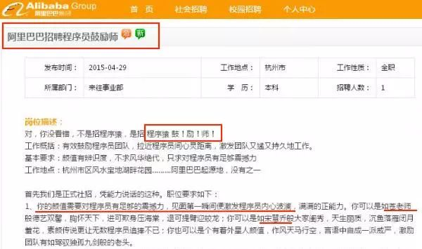
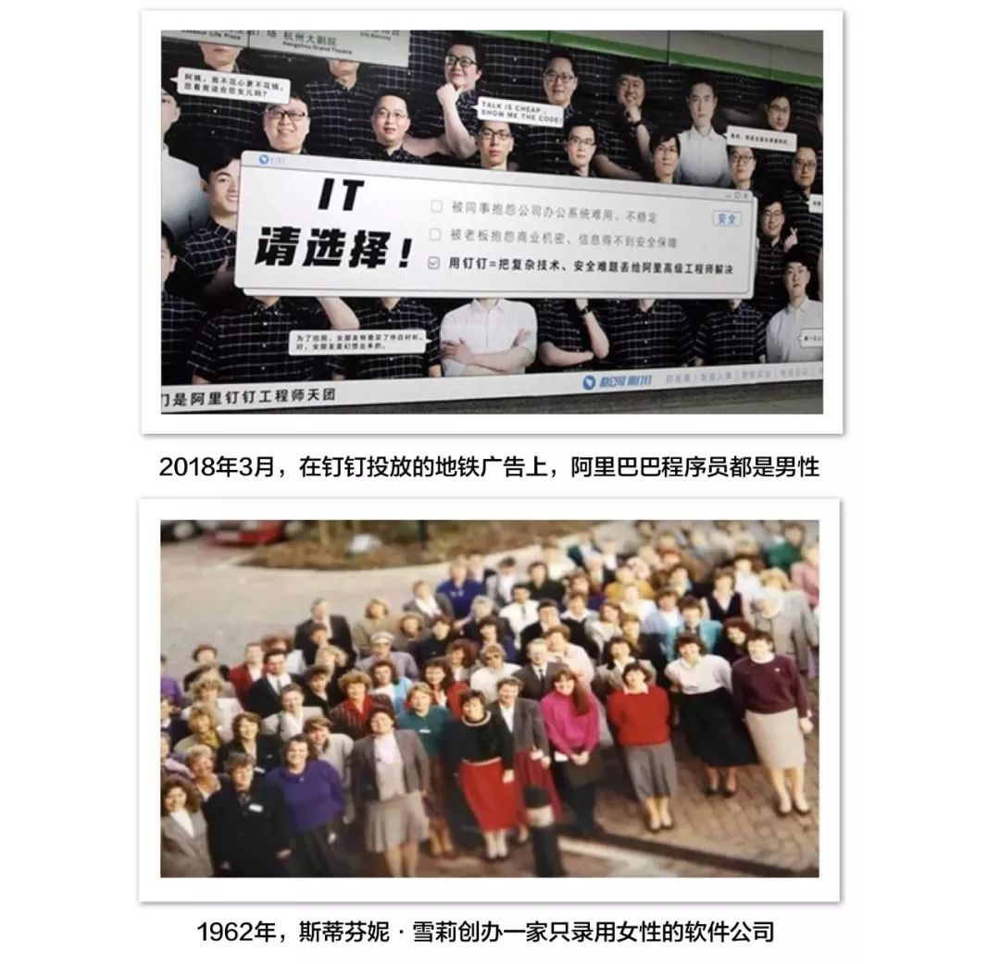
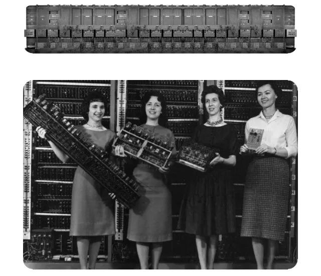

为什么有事业心的女人头顶是平的？
消除就业性别歧视
诉说职场女性故事
快来加入我们
粉丝投稿
这是微博粉丝给我们的投稿故事。
这和我们之前发布女程序员楼楼、HR杜杜的经历有相似之处。
在楼楼大学时，老师也认为女生学不好编程这个专业。求职时，她也曾因为女性身份数次被拒绝。工作至今，楼楼还没有遇到过女程序员leader。
在当HR之前，在杜杜的面试经历里，也被面试官问过结婚生子等隐私。在当HR之后，杜杜有意识地不去问求职者这些问题。
有一次，杜杜向公司推荐了一位28岁的女性。接收部门知道这位女性未婚后，觉得这位求职者有“问题”、“不对劲”，挑选了另一位求职者。
有许多报告表示中国女性的劳动参与率是世界第一。这也让很多人认为现今的职场环境对女性已经足够友好。但实际上，在《2017年全球性别差距报告》中，中国的性别差距在144个国家中是第100位。中国女性花在家务劳动等无报酬工作上的时间占总劳动时间的44.6%，而男性仅为18.9%。中国女性在公司董事会级别的人数占比仅为9.4%。
女性可以做什么职业，做到什么职位，似乎由一套“女性就业潜规则”所左右。

根据教育部发布的教育统计数据，2016年全国普通本科高校女学生的比率是53.44%。在学校的学习上，女性可以和男性取得同样好的成绩，甚至远超男性。

教育部2016年统计数据
可是女性在进入职场后，几乎立即陷入劣势地位：求职被拒、怀孕被辞退、升职难度大、生育和事业难以平衡……
根据国家统计局公布的数据，女性的失业率高于男性、就业率却低于男性，同时女性就业层次也总体偏低。有人会将原因归于女性的生理特征和女性气质处于弱势。
“不能上夜班”、“不能常出差”、“不能喝酒”、“要照顾家庭”、“没有魄力”是企业最常用来拒录女性的理由。
这也体现出企业认为女性的能力、女性创造的价值比男性更低。
就像一个人，TA的价值观决定了TA的行为。企业／组织的价值观、信念、处事方式的集合也塑造了企业文化。
2015年愚人节，魅族发布“程序员鼓励师”的招聘。此招聘被广泛认为是营销策略，但之后有多家企业发布了该职位的招聘。同年4月29日，阿里巴巴官方招聘网站也上线“程序员鼓励师”一职。这项工作最重要的要求就是：颜值对程序员有足够震撼力。
有意无意地歧视、贬低女性的企业文化并不仅是个例，而是。

阿里巴巴的招聘
可以看到，有许多企业将职位设为“仅限男性”；将婚恋生育情况作为是否录用女性的考量（但对男性则不会）；认为女性只能做好辅助类的工作（秘书、文员、护士等）……
斯蒂芬妮·雪莉（Stephanie Shirley）采取了相反的做法。
1962年，她花费6英镑创立一家软件公司，并坚持只招聘女员工，只为女性提供就业机会。在之后的十几年里，这家公司有200余位女员工，只有几位男员工，主要的管理者也是女性。
直到1975年，英国通过《反性别歧视法案》，才多招录了一些男性员工。这家公司研发了黑匣子飞行记录器等技术，让雪莉跻身英国女性富豪排行榜前十。
只要提供机会让女性施展才华，女性也可以做出和男性一样优异的成就。
改变企业文化，提供更有利于女性的就业环境，会给企业带来更大的价值。
都是程序员

社会文化同样也会影响女性就业。
“理工男、文科女”的概念深入人心。以计算机科学来举例，有许多人认为男性更适合计算机科学及相关技术。
2017，Stack Overflow 发布调查报告。全球有超过 64,000 名开发者参与调查。此报告显示女性程序员为7.6%，男女比例是11.6 ：1。今年，程序员客栈发布《2018年中国程序员薪资生存现状调查报告》。此报告显示中国女性程序员的比率为7.6%，男女比例近12:1。

程序员性别比
女性程序员的稀缺，难道更加佐证男性更擅长编程吗？当然不是。
1842年到1843年间，爱达·爱丝（Ada Lovelace）在翻译计算机的论文时，增加了许多自己设想的注记。她是世界上首次提出编程概念的人，也是史上第一位计算机程序员。
ENIAC计算机是世界上第一台电子计算机，于1946年建成，随后被美国陆军接收使用。为这台计算机做了主要编程工作的6名女性，却在计算机历史中被遗漏和淡化，直到2010年才被正视。
在这个行业刚起步的时候，大多数的程序员都是女性。计算机编程曾被认为是非常女性化的职业。

ENIAC计算机和主要编程员
二十世纪六十年代，编程变成工科专业。这个职业也逐渐从女性专业变成男性专业。二十世纪八十年代，有许多商家塑造了“男孩玩电子游戏，女孩玩洋娃娃”的广告印象。
在《俱乐部揭秘：计算机科学中的女性》中描述了这样的场景：男孩可以从小接触电脑，电脑也被放置在他们的房间，女孩想使用电脑则需要询问。
近10年来，计算机科学与技术始终是高考热门报考专业，也被许多人认为是“最适合男生报考的专业”。
学习、从事计算机的女性开始减少。直到演变成今天，在世界、在我国男女程序员的比率都将近12:1。
不仅是计算机这个行业，大部分负有前景、待遇好的专业/职位都由男性垄断。当大多数人都认为男性或女性更适合从事哪个职业，这种社会期待营造的环境变成了女性就业的阻碍。
由此，我们也可以看到社会文化是如何构建了性别差异，又是如何将其演变成性别歧视。
职场始终有男性的“专属位置”

除了企业文化和社会文化外，教育、福利政策、社会保障等因素也会影响女性就业。
工作对于女性来说，其意义远大于挣钱。
家庭主妇的家务劳作通常不被认可为社会价值。这使得全职家庭主妇的人生通常需要依附于婚姻、丈夫。离婚率逐年升高，女性因此面临的风险也大于男性——离婚之后，家庭主妇能否回归职场是一大挑战。而有工作的女性，她有更广泛的社交圈，更稳定的经济来源，她的价值也更被社会认可。
家庭和工作当然不是完全隔离，只能二选一。但当福利政策在鼓励女性结婚生育，当企业文化认为结婚女性创造的价值低，在这样的社会环境中，女性就像被几座大山包围，其面临的就业难题就格外严峻。
从2014年起，就业歧视监察大队对涉及性别歧视的招聘广告进行了上千次的举报。多次举报带来了许多影响，其中不乏企业被处罚的案例；朝阳区劳动监察大队主动促成我们和智联招聘网站的对谈；58同城将“性别歧视”设置为信息发布页里明确禁止性别歧视；举报页面里包含“涉嫌就业歧视”。

就业歧视举报页面
雪莉在TED演讲中说：“你们知道吗？为什么像我们这样有抱负的女性，头的形状都是平的？因为我们无数次，撞击着头顶上的透明天花板，试图打破偏见和不平等。”
感谢每一位发声者的努力，也期待每一位女性从阴影中走出，让自己的作为、贡献、价值被尊重。
斯蒂芬妮·雪莉TED演讲
参考：
《2016教育统计数据》
http://www.moe.gov.cn/s78/A03/moe_560/jytjsj_2016/2016_qg/201708/t20170822_311614.html
《中国城市性别失业率差异与就业歧视》
http://ex.cssn.cn/shx/shx_jjshx/201609/t20160902_3187090.shtml
《程序员群体为什么是直男癌和厌女症的重灾区？》
https://www.thepaper.cn/newsDetail_forward_1803784
END
我们长期招募监察员
也长期接受投稿
有意愿者，请和我们联系：
1）私信联系微博：@就业性别歧视监察大队；
2）私信微信公众号：就业性别歧视监察大队。
（推荐微博联系，微信恐无法及时回复～）